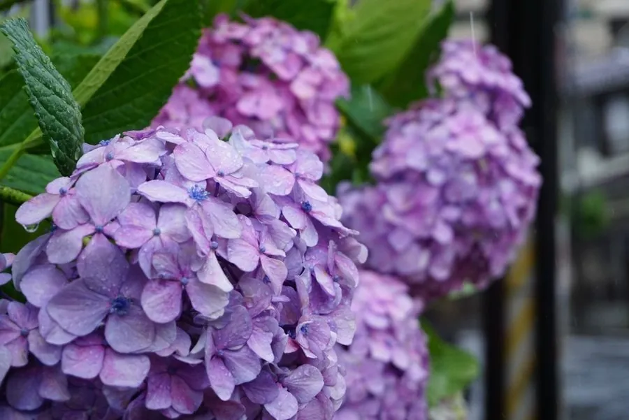

灌木与花木 · 植物界
绣球 Hydrangea macrophylla

夏季开花、花序呈球状的落叶灌木，花色随土壤酸碱度变化，酸性土开蓝花、碱性土开粉花，是庭院常见观赏植物。
- 分类
- 门被子植物门纲木兰纲目山茱萸目科绣球花科属绣球属
- 栖息环境
- 海拔 500–1500 米的山谷林下与溪边，喜温暖湿润和半阴环境
- 地理分布
- 原产中国长江流域及日本，中国南方各地广泛栽培
- 保护级别
- 暂无评估；中国未列入国家重点保护野生植物名录
物种志
绣球为落叶灌木，高可达 1.5 m，枝条粗壮，小枝绿色；叶片对生，倒卵形至宽椭圆形，边缘具粗齿，叶面绿色、叶背淡绿。花期 5–7 月，伞房花序顶生，由大量小花组成球形花序，直径可达 20 cm；不育花的花瓣状萼片 4 枚，颜色随土壤酸碱度变化，酸性土中呈蓝色、碱性土中呈粉红色，可育花小、位于花序中央。蒴果成熟时开裂。
绣球原产中国长江流域及日本，喜温暖湿润、半阴环境，忌强光暴晒与干旱，适宜疏松肥沃、排水良好的酸性土壤。它是世界著名的观赏花木，品种繁多，有“无尽夏”等可连续开花的园艺品种；花序硕大、花期长，适合庭院、花境与盆栽观赏。绣球的根、叶与花可入药，但全株有毒，误食可能引起腹痛呕吐，栽培与观赏时需注意。
形态与习性
- 株高可达 1.5 m，枝条粗壮
- 花期5–7 月，花序直径可达 20 cm
- 果期8–9 月，蒴果开裂
- 光照喜半阴，忌强光暴晒
- 水分喜湿润，不耐干旱
- 土壤酸性壤土，pH 4.5–6.0 时开蓝花
- 主要用途庭院观赏、花境与盆栽、切花
趣味知识
- 绣球的花色由土壤酸碱度决定，酸性土中开蓝花，碱性土中开粉红花。
- 绣球硕大的球形花序其实由许多小花组成，外围是不育花，中央是可育花。
- “无尽夏”是能连续开花、花期很长的绣球品种，在园林中应用广泛。
- 绣球全株有毒，误食可能引起腹痛、呕吐，观赏时请勿采食。